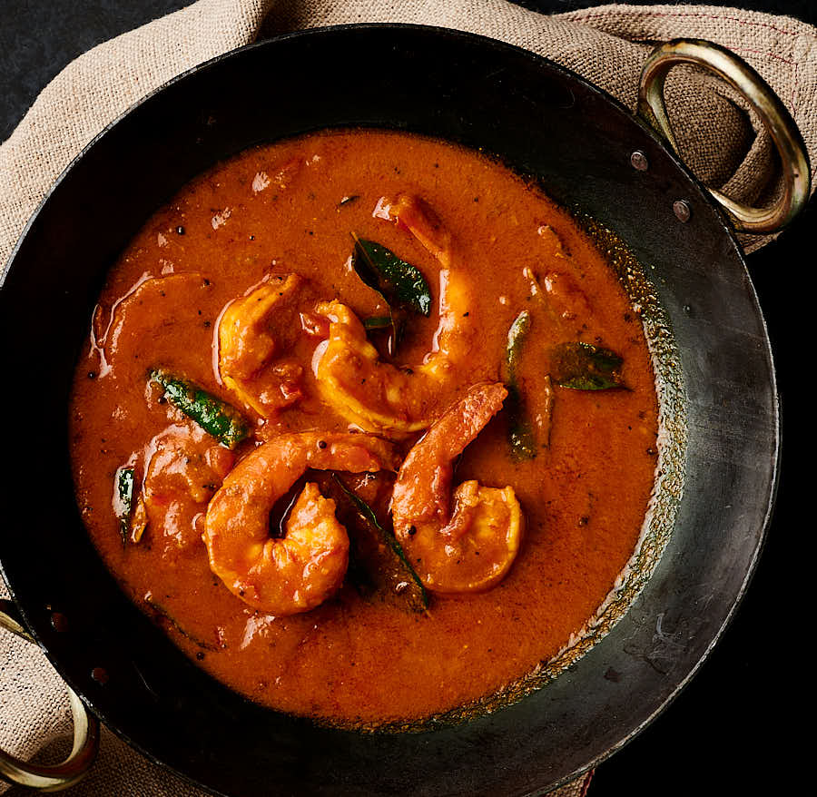

Prawn Curry

Description
Shrimp Curry (Portuguese: caril de camarão, Indonesian: 'gulai udang or kari udang), also known as prawn curry, is a typical curry dish of Burmese cuisine,
Indonesian cuisine in Indonesia (Aceh and West Sumatra), Indo-Portuguese cuisine in India (Goa) and Portugal, Mozambican cuisine in Mozambique and Thai cuisine
Ingredients
- Mustard Oil
- Salt
- Masala
- Garlic Paste
- Onion
Steps
- Warm the mustard oil for 5-7 minute.
- Then put the chopped onion and cooked it for atleast 8-10 minute.
- Then put the garlic paste and cooked it for 9-10 minute.
- Add masala to it and stir for 3-4 minute and then put the prawn or shrimp into it.
- Cook the meat for atleast 30 minute and then add water to it.
Return to top
Return to main page